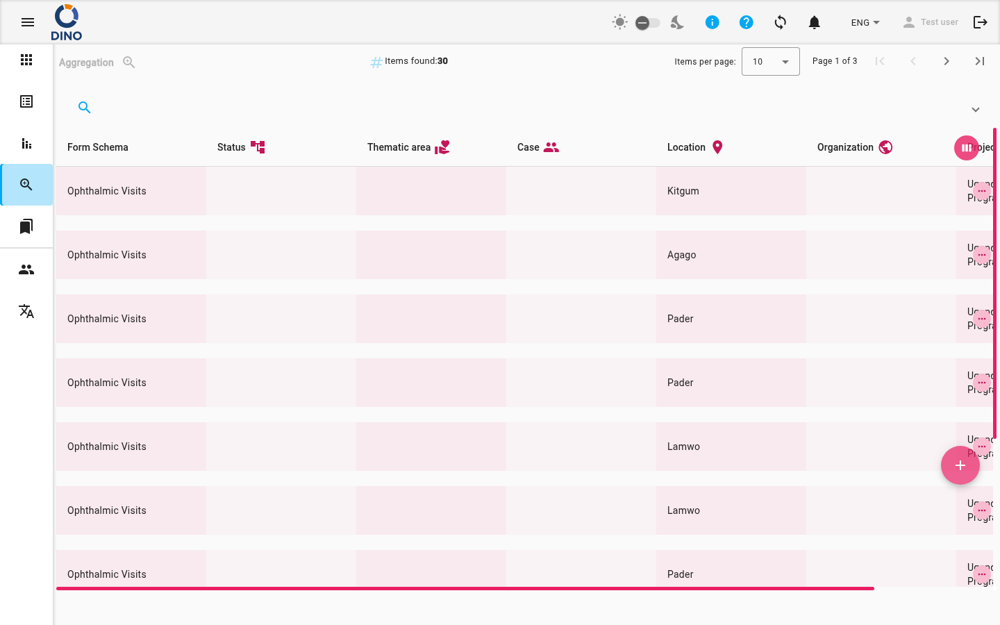
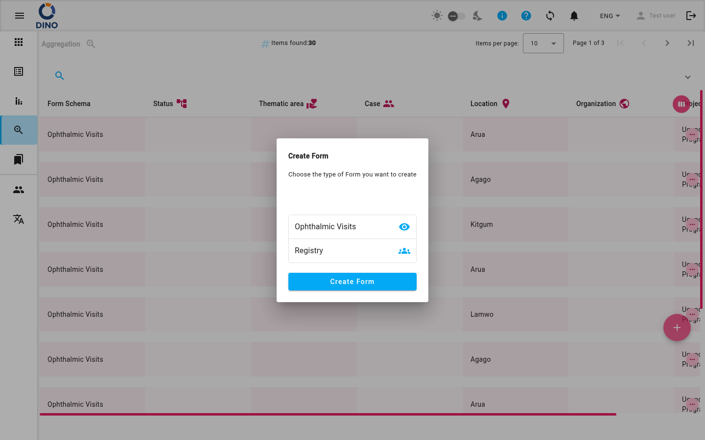

Agrégation
La page Agrégation vous offre une vue centralisée de toutes les soumissions de formulaires de vos projets. Vous pouvez parcourir, filtrer et agir sur les soumissions sans devoir ouvrir chaque formulaire individuellement.

Consultation de la liste d'agrégation
Le tableau principal affiche une ligne par soumission. Par défaut, vous voyez les colonnes Schéma de formulaire et Statut, mais vous pouvez personnaliser les colonnes affichées à l'aide de l'icône Vue semaine dans l'en-tête du tableau.
- Chaque ligne montre une icône de statut et, si le formulaire comporte des problèmes de validation, une icône d'avertissement.
- Survolez une ligne pour la mettre en surbrillance ; cliquez n'importe où sur une ligne pour la sélectionner et révéler les actions disponibles.
En haut de la liste, le compteur Éléments trouvés et le paginateur vous indiquent le nombre de soumissions et vous permettent de naviguer entre les pages.
Filtrage et recherche
Une barre de recherche et un panneau de filtre sont disponibles pour affiner la liste.
- Cliquez sur l'icône de recherche dans la barre supérieure pour dérouler le panneau de filtre.
- Utilisez le champ mot-clé pour rechercher dans tous les champs.
- Utilisez les sélecteurs de plage de dates pour filtrer par date de création.
- Des filtres supplémentaires apparaissent pour Zone, Cas, Lieu, Organisation, Projet, Statut du formulaire et Utilisateur. Ceux-ci sont dynamiques et respectent les définitions de métriques de votre formulaire.
- Les filtres actifs sont affichés sous forme de puces sous la barre de filtre – cliquez sur l’icône annuler sur une puce pour la supprimer.
Filtres prédéfinis
La page Agrégation ne prend pas en charge les préréglages de filtres sauvegardés. Vous pouvez combiner les filtres à chaque fois que vous avez besoin d’une vue personnalisée.
Actions sur les lignes
Après avoir sélectionné une ligne, les icônes d’action apparaissent dans la colonne Actions sur le côté droit du tableau.
| Icône | Action | Description |
|---|---|---|
visibility |
Voir | Ouvrir la soumission en mode lecture seule. |
create |
Modifier | Modifier les données de la soumission. |
printer |
Imprimer | Générer un PDF de la soumission. |
delete |
Supprimer | Supprimer la soumission après confirmation. |
Cliquez sur Plus d'options (trois points) pour voir les actions supplémentaires pour cette ligne. Les actions Imprimer et Supprimer demandent une confirmation avant d’être exécutées.
Créer une nouvelle soumission
Le bouton flottant + en bas à droite de l’écran vous permet de démarrer une nouvelle soumission.

- Cliquez sur le bouton +. Une boîte de dialogue s'ouvre affichant les schémas de formulaire disponibles.
- Sélectionnez ou recherchez le schéma de formulaire que vous souhaitez utiliser.
- Après la sélection, vous êtes redirigé vers la page Modifier le formulaire pour remplir les données.
Impression d'un PDF
Vous pouvez générer un PDF de toute soumission incluant le libellé du schéma de formulaire, les noms des métriques actives et les données remplies.
- Sur la ligne que vous souhaitez imprimer, cliquez sur l'icône Imprimante (ou utilisez le menu Plus d'options s'il est disponible).
- Confirmez l'action lorsque vous y êtes invité.
- Le PDF s'ouvre dans un nouvel onglet du navigateur ou se télécharge automatiquement.
L'en-tête du PDF inclut le titre du schéma de formulaire et tous les noms de métriques actuellement actifs dans le système.
Disponibilité des métriques
Le PDF imprimé inclut uniquement les métriques qui sont actives au moment où vous déclenchez l'impression. Si une métrique a été ajoutée après la création de la soumission, elle n'apparaîtra pas.